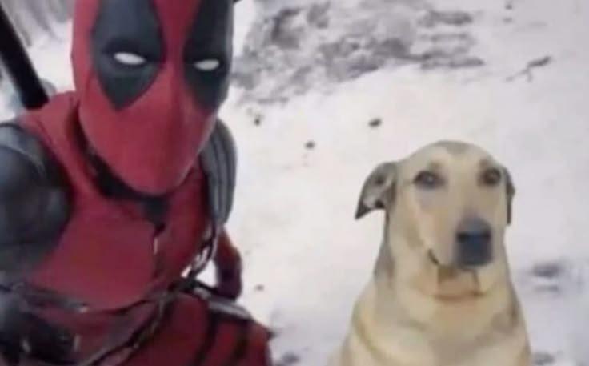
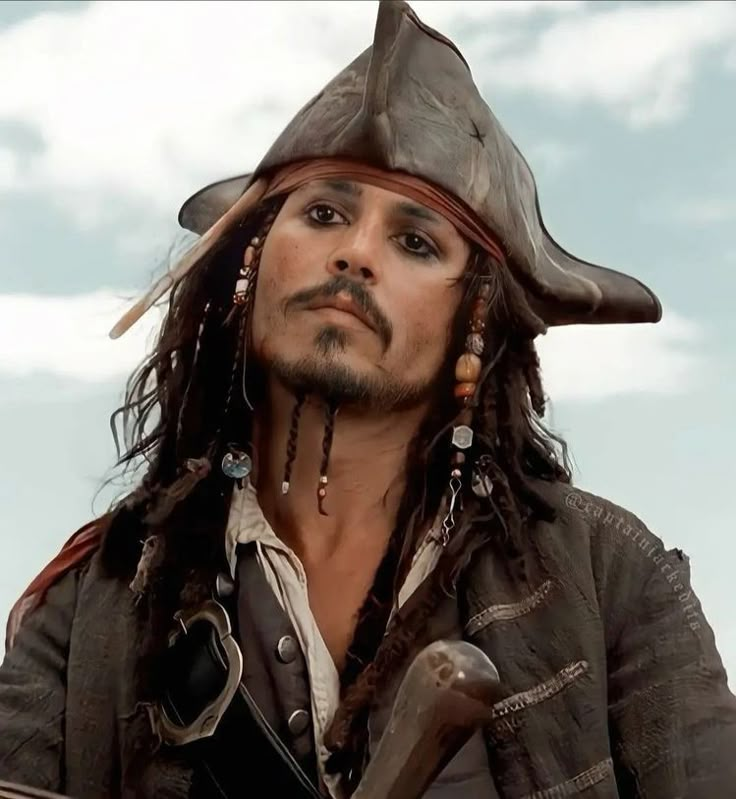
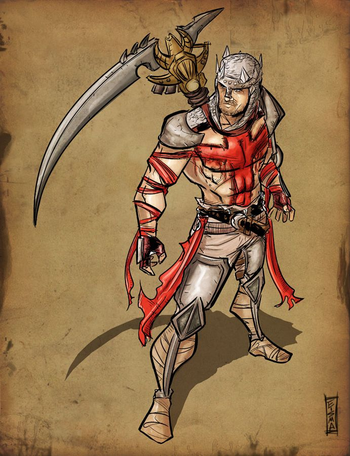

Mis personajes favoritos
Hola aqui vamos hablar de mis personajes favoritos ya sean en juegos o en peliculas
Mis personajes favoritos son:
Numero 1
Deadpool
Deadpool es un personaje ficticio de cómics creado por el escritor Fabian Nicieza y el artista Rob Liefeld. Es conocido por su humor irreverente, su habilidad para romper la cuarta pared y su estilo de lucha acrobático. Deadpool es un mercenario con una personalidad caótica y sarcástica, lo que lo convierte en un personaje único en el universo de Marvel.

Numero 2
𝐉𝐚𝐜𝐤 𝐒𝐩𝐚𝐫𝐫𝐨𝐰
Jack Sparrow es un personaje ficticio de la franquicia de películas "Piratas del Caribe", interpretado por Johnny Depp. Es un capitán pirata astuto, carismático y algo excéntrico, conocido por su ingenio, su habilidad para salir de situaciones complicadas y su amor por el ron. Jack Sparrow es famoso por su estilo de vida aventurero y su capacidad para navegar por los mares del Caribe.

Numero 3
Mario bros
Mario es un personaje icónico de los videojuegos, creado por Nintendo. Es un fontanero italiano que se embarca en aventuras para rescatar a la Princesa Peach y derrotar al villano Bowser. Mario es conocido por su característico sombrero rojo, su bigote y su habilidad para saltar y correr a través de mundos coloridos y desafiantes.

Numero 4
Ezio Auditore
Ezio Auditore es un personaje ficticio de la serie de videojuegos "Assassin's Creed". Es un asesino italiano del Renacimiento, conocido por su habilidad en el combate, su astucia y su papel en la lucha contra los Templarios. Ezio es uno de los personajes más queridos de la saga y su historia abarca varias entregas del juego.
.jpeg)
Numero 5
Dante Infernal
Dante Alighieri es el protagonista del videojuego Dante’s Inferno, una reinterpretación oscura y de acción de la clásica obra La Divina Comedia. En el juego, Dante es un caballero cruzado que, tras regresar de la guerra, se embarca en un viaje al infierno para rescatar el alma de su amada Beatriz, secuestrada por Lucifer. Armado con la guadaña de la Muerte y la cruz de Beatriz, Dante enfrenta hordas de demonios a través de los nueve círculos del Infierno, cada uno representando un pecado capital. El personaje mezcla elementos históricos y literarios con una narrativa intensa y combates brutales, convirtiéndose en una figura icónica del juego de acción.
